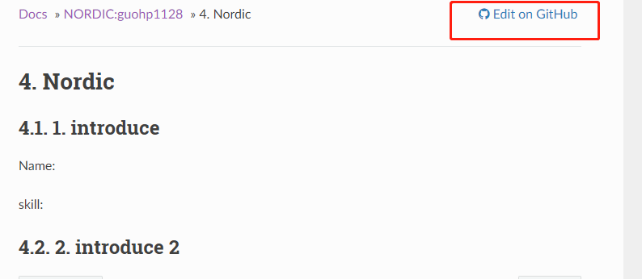
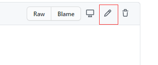
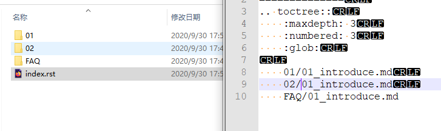
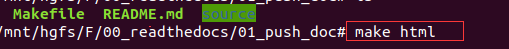

1. WIKI FAQ
1.1. 1. 如何修改markdown
如果只是修改markdown的里面的文字的话，推荐使用github里面自带的编译器来编辑，直接保存就可以提交commit了。

然后直接点击

1.2. 2. 如何在本地新建文件以及如何验证
如果不是特别必要，请最好不要操作这些步骤，直接使用上述用github直接编辑的方式比较好。
本地新建文件需要添加索引路径到index.rst上面，可以参考其他文件夹的添加方法：

新建文件夹和文件要注意以下几点：
文件夹和文件名不能有中文
文件夹和文件名不能有空格
文件夹要和index.rst里面完全匹配
图片路径尽量用左斜杠
/图片路径写法
新建和改好自己的文件一定要本地验证一下再上传提交PR
如何验证
1.2.1. STEP 1
找一个linux的环境, 比如ubuntu虚拟机, 需要有python3 git vim pip 环境 需要修改软件源的自行百度。
sudo apt-get install python3
sudo apt-get install git
sudo apt-get install vim
sudo apt-get install python3-pip
1.2.2. STEP 2
pip如果是国内需要改源速度才能快一些
新建一个文件touch ~/.pip/pip.conf 写入下面的数据
[global]
index-url = https://pypi.tuna.tsinghua.edu.cn/simple
[install]
trusted-host=mirrors.aliyun.com
1.2.3. STEP 3
还需要将python3作为默认的python, pip3作为默认的python
输入cmd
sudo update-alternatives --install /usr/bin/python python /usr/bin/python3 150
sudo ln -s /usr/bin/pip3 /usr/bin/pip
1.2.4. STEP 4
安装Sphinx，命令安装对应的包:
pip install sphinx
pip install sphinx-autobuild
pip install sphinx_rtd_theme
pip install recommonmark
pip install sphinx_markdown_tables
git clone所有文件
在有Makefile文件的目录下面敲命令
make html

最后看下编译有没有自己新建文件的相关的error，没有error说明没有问题，有error请检查下error
然后打开根目录下面的
build/html/index.html打开之后查看下自己添加的页面是否可以正常显示。提交的时候一定要把添加的所有文件一起提交。